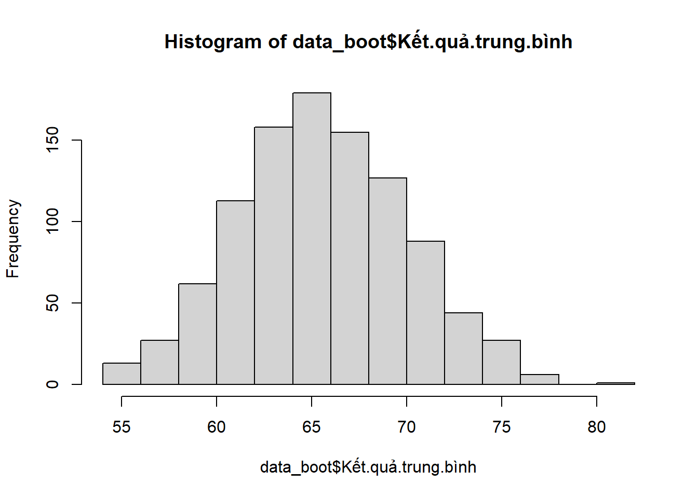
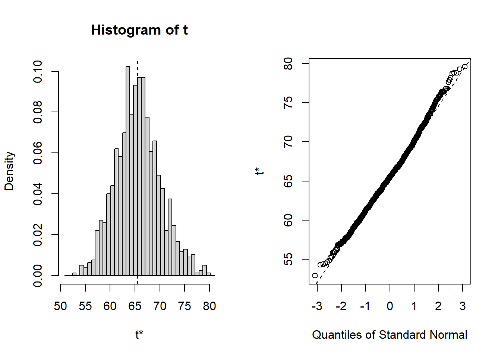

set.seed(123)
## Giả sử ta đo 10 người
can_nang <- c(60, 55, 71, 45, 89, 56, 73, 49, 69, 88)14 Khái niệm về bootstrap qua ví dụ tính trung bình mẫu
14.0.1 Định nghĩa: What is bootstrap?
Bootstrap is a resampling method where large numbers of samples of the same size are repeatedly drawn, with replacement, from a single original sample.
The basic bootstrapping procedure is as follows:
Take k repeated replacement samples from a given dataset.
Calculate the statistic of interest for each sample.
These yields k different estimates for a given statistic, which you can then use to calculate the statistic’s standard error and create a confidence interval.
Tạm dịch: Bootstrap là phương pháp tái lấy mẫu (cho phép lấy trùng) từ 1 mẫu gốc để tạo ra rất nhiều mẫu giả lập nhằm tính toán giá trị thống kê mà bạn quan tâm (ví dụ trung bình), rồi từ đó ta sẽ tính khoảng tin cậy hay sai số chuẩn trên các kết quả trung bình giả lập trong ý tưởng phân phối của dữ liệu mẫu lớn này sẽ là phân phối chuẩn (Law of large numbers).
14.0.2 Bước 1: Mô tả ví dụ minh họa
Để hiểu khái niệm bootstrap một cách cơ bản nhất, ta sẽ xét qua ví dụ đo cân nặng của một đối tượng nghiên cứu nào đó rồi tính ra khoảng tin cậy. https://thongkesinhhoc.quarto.pub/khoang-tin-cay.html
Ví dụ một nhà nghiên cứu muốn biết cân nặng trung bình của người dân ở một tỉnh nào đó, thì thông thường ta có thể cân toàn bộ người dân trong tỉnh đó (với số dân khoảng 400000 người) sau đó cộng lại lấy trung bình, ta sẽ có được trung bình quần thể \(\mu\) là con số chính xác tuyệt đối đại diện cho trung bình của toàn bộ người dân ở tỉnh đó.
Tuy nhiên vì không có kinh phí để đo đạc cùng lúc số lượng người lớn như vậy, mà nếu đo theo kiểu lần lượt thì cân nặng của dân số sẽ thay đổi (người đo đầu tiên với người đo thứ 1000 thì cân nặng của người đo đầu tiên đã khác ở thời điểm đó rồi) nên ngay cả cách tiếp cận đo khối lượng tổng thể dân số thì kết quả cũng không chính xác nếu việc đo khối lượng không diễn ra cùng một lúc.
Như vậy, nếu ta chỉ có thể đo một vài người dân trong tỉnh đó (tất nhiên sẽ phải lấy mẫu ngẫu nhiên) rồi tìm cách resampling hay là tái lấy mẫu trên chính số liệu của lần đo thực này thì ta sẽ có rất nhiều mẫu giả lập/simulation để tính ra khoảng tin cậy mà nếu lấy mẫu ở lần tiếp theo thì giá trị trung bình của mẫu đó sẽ dao động trong khoảng này.
## Kết quả trung bình từ mẫu quan sát
mean_mau_quan_sat <- mean(can_nang)
mean_mau_quan_sat[1] 65.5Thực hiện bootstrap với 1000 lần lặp lại cho sample size là 10 cá thể
sample_size <- length(can_nang)
n_boot <- 1000 # số lần sẽ resampling với replacement là TRUE
data_boot <- data.frame() # lưu kết quả tái lấy mẫu này trong data frame
for (i in 1:n_boot)
{
cach_lay_mau <- sample(1:length(can_nang), replace = TRUE)
data_boot <- rbind(data_boot, can_nang[cach_lay_mau])
}
colnames(data_boot) <- paste("Người thứ", 1:length(can_nang))
rownames(data_boot) <- paste("Lần lấy mẫu giả lập thứ", 1:n_boot)
apply(X = data_boot, MARGIN = 1, FUN = mean) -> ket_qua_trung_binh
data_boot$`Kết quả trung bình` <- ket_qua_trung_binh
# write.table(x = data_boot, file = "data_boot.tsv",
# row.names = F, sep = "\t\t", quote = FALSE)
write.csv(data_boot, "data_boot.csv")
library(kableExtra)
kable(data_boot, "simple") -> ok
write.table(ok, "data_boot.txt", quote = FALSE, row.names = FALSE)cat data_boot.txt | sed 1d > data_boot_ok.txt # run dòng lệnh này trong bash để bỏ dòng đầu tiênKết quả sau khi chạy bootstrap ta có 1000 mẫu giả lập với kết quả trung bình tương ứng. View
14.0.3 Bước 2: Phân tích kết quả
Đây là tần số của các con số trung bình từ 1000 lần lấy mẫu, từ đây ta sẽ tính ra các chỉ số khác như khoảng tin cậy, độ lệch chuẩn, sai số chuẩn của giá trị trung bình nếu được lấy mẫu trong thực tế sẽ dao động trong vùng đồ thị này.
hist(data_boot$Kết.quả.trung.bình)
Ta có thể thực hiện bootstrap bằng package boot
library(boot)
can_nang <- c(60, 55, 71, 45, 89, 56, 73, 49, 69, 88)
can_nang_df <- as.data.frame(can_nang)
meanfun <- function(data, i){
d <- data[i, ]
return(mean(d))
}
set.seed(123)
bo <- boot(data = can_nang_df, statistic = meanfun, R = 1000)
bo
ORDINARY NONPARAMETRIC BOOTSTRAP
Call:
boot(data = can_nang_df, statistic = meanfun, R = 1000)
Bootstrap Statistics :
original bias std. error
t1* 65.5 0.1241 4.508722plot(bo)
boot.ci(bo, conf = 0.95, type = "bca")BOOTSTRAP CONFIDENCE INTERVAL CALCULATIONS
Based on 1000 bootstrap replicates
CALL :
boot.ci(boot.out = bo, conf = 0.95, type = "bca")
Intervals :
Level BCa
95% (57.30, 75.78 )
Calculations and Intervals on Original Scale14.0.4 Tài liệu tham khảo
https://towardsdatascience.com/a-practical-guide-to-bootstrap-with-r-examples-bd975ec6dceahttps://rpubs.com/evelynebrie/bootstrappinghttps://datasciencetut.com/how-to-perform-bootstrapping-in-r/https://bash-intro.rsquaredacademy.com/r-command-line.html
A lot of people ask “What happens when the original collection of measurements is not representative of the underlying distribution?” It’s important to remember that a confidence interval is not guaranteed to overlap the true, population mean. A 95% CI means that if we make a ton of CIs using the same method, 95% of them will overlap the true mean. This tells us that 5% of the time we’ll be off. So yes, a sample that is totally bonkers is possible, but rare. Understanding this risk of making the wrong decision, and managing it, is what statistics is all about. Also, at 5:55 I say there are up to 8^8 combinations of observed values and possible means, but this assumes that order matters, and it doesn’t. So 8^8 over counts the total number of useful combinations and the true number is 15 choose 8, which is 6435 (for details on this math, see: https://en.wikipedia.org/wiki/Multiset#Counting_multisets )
We take for granted all that went behind that idea of 95% CI that you stated - it was Jerzy Neyman’s who came up with that definition. Have you read “The Lady Tasting Tea”? A bit of a history of some incredible mathematicians, including Ronald Fisher and Jerzy Neyman. The 95% comes up on page 123. Thanks for all your valuable statistics videos!
Video chi tiết
https://www.youtube.com/live/isEcgoCmlO0?feature=shareDùng bootstrap tính p-valuehttps://youtu.be/N4ZQQqyIf6k